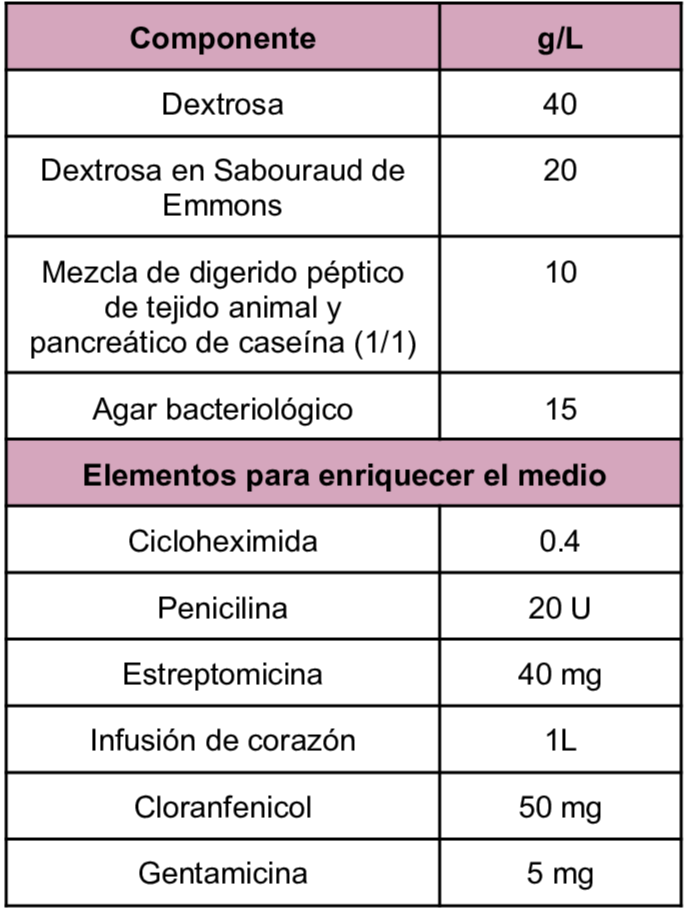
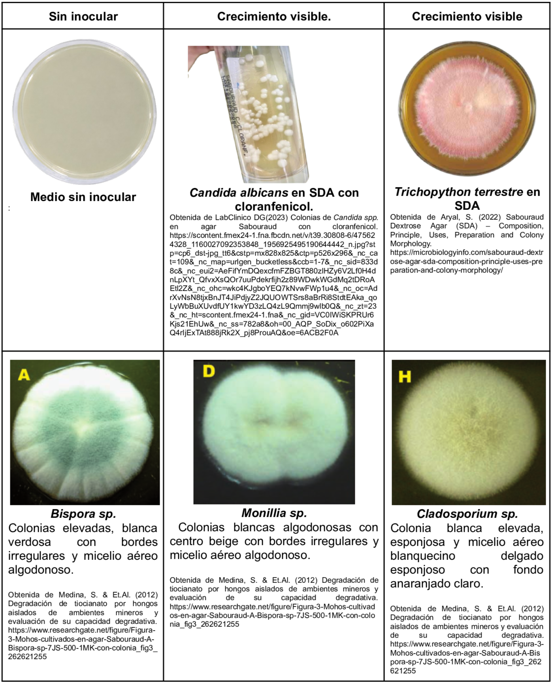

Medio utilizado para el aislamiento de levaduras, mohos patógenos y microorganismos acidúricos de muestras clínicas, cosméticas y de alimentos. Dentro de la composición del medio se tiene la Dextrosa como carbohidrato fermentable, peptonas como fuente de diversos nutrientes, al tener un pH ácido permiten el adecuado desarrollo de los hongos. Se puede enriquecer con antibióticos tales como cicloheximida, penicilina y estreptomicina e infusión de corazón.
Composición

pH a 25°C 5.6±0.2
Resultados Posibles
Se puede esperar un crecimiento variado dependiendo del hongo inoculado.
Candida albicans:
Colonias blancas y cremosas
Aspergillus brasiliensis:
Micelio blanco con esporas negras
Saccharomyces cerevisiae:
Colonias crema abovedadas

Referencias
Aryal, S. (2022) Sabouraud Dextrose Agar (SDA) – Composition, Principle, Uses, Preparation and Colony Morphology. https://microbiologyinfo.com/sabouraud-dextrose-agar-sda-composition-principle-uses-preparation-and-colony-morphology/
Condalab (2019) Agar Dextrosa Sabouraud EP/USP. https://amyd.quimica.unam.mx/pluginfile.php/9878/mod_folder/content/0/Agar%20dextrosa%20Sabouraud.pdf?forcedownload=1